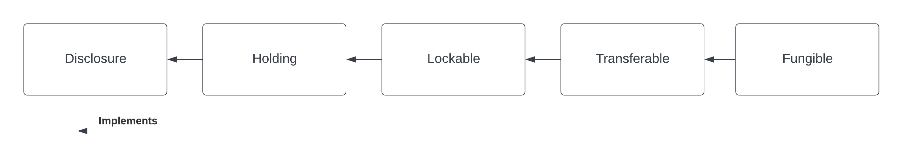

Transfer¶
This tutorial introduces the core asset model of the library through a simple example. The purpose is to illustrate the concepts of account, instrument, and holding, as well as showing how to work with Daml interfaces.
We are going to
- create accounts for Alice and Bob at the Bank
- issue a cash instrument
- credit a cash holding to Alice’s account
- transfer the holding from Alice to Bob
We expect the reader to be familiar with the basic building blocks of Daml. If that is not the case, a suitable introduction can be found in this page.
Download the code for the tutorial¶
As a pre-requisite, the Daml SDK needs to be installed on your machine.
Open a terminal and run:
daml new quickstart-finance --template quickstart-finance
This creates a new folder with contents from our template. Navigate to the folder and then run
./get-dependencies.sh
to download the required daml-finance packages.
You can then run
daml studio
to open the code editor and inspect the code.
Structure of the code, dependencies¶
The code includes
- four workflows defined in the
Workflowsfolder - two Daml scripts defined in the
Scriptsfolder
The first encapsulate the core business logic of the application, whereas the latter includes scripts that are executed on a one-off basis.
If you take a closer look at the Workflows, you will recognize three
initiate / accept patterns to
- create an account
- make a deposit to the account
- execute a holding transfer
The DvP workflow will be used in the next tutorial, so please ignore that one for now.
Files in the Workflows folder depend only on interface packages of daml-finance
(the ones that start with Daml.Finance.Interface.*), as you can see from
the import list.
This is important, as it decouples the user-defined business logic from
the template implementations used in daml-finance and, thus, makes it easier
to upgrade the one without being forced to upgrade the other.
On the other hand, the script in the Scripts folder depends also on
implementation packages (in this case, Daml.Finance.Holding and Daml.Finance.Instrument.Base).
This is not problematic, as the script is meant to be run only once when the application is initialized.
Running the Transfer script¶
Let us now explore the Transfer script step-by-step.
Creating Holding and Account factories¶
The first instruction instantiates an account factory. This is just a
template that is used by a party (the Bank in this case) to create
accounts as part of the CreateAccount workflow.
accountFactoryCid <- toInterfaceContractId @Account.F <$> submit bank do
createCmd Account.Factory
with
provider = bank
observers = empty
Notice how the ContractId is immediately converted to an interface
upon creation: this is because our workflows do not have any knowledge
of concrete template implementations.
Similarly, we define a holding factory, which is used within an account
to Credit and Debit holdings.
holdingFactoryCid <- toInterfaceContractId @Holding.F <$> submit bank do
createCmd Fungible.Factory
with
provider = bank
observers = fromList [("PublicObserver", singleton $ singleton public )]
This factory contract can be used to create Fungible holdings, which
are defined in Daml.Finance.Holding.Fungible and are
fungible, as well as
transferable.
We are adding a so-called public party as an observer to the holding factory. This is done to ensure that every other party has visibility over this contract, as all parties can readAs the public party. The reason why this is necessary will come into play at the end of this tutorial.
Opening Alice’s and Bob’s accounts¶
Once the factory templates are setup, we leverage our CreateAccount
workflow to create accounts at the Bank for Alice and Bob.
The creation of an account needs to be authorized by both the
custodian and the owner (resp. the Bank and Alice in our
case). Authorization is collected using an initiate / accept pattern.
aliceRequestCid <- submit alice do
createCmd CreateAccount.Request
with
owner = alice
custodian = bank
aliceAccount <- submit bank do
exerciseCmd aliceRequestCid CreateAccount.Accept
with
label = "Alice@Bank"
description = "Account of Alice at Bank"
accountFactoryCid = accountFactoryCid
holdingFactoryCid = holdingFactoryCid
observers = []
Bob’s account is created in a similar fashion.
Creating the cash instrument¶
In order to credit Alice’s account with some cash, we first need
to introduce a cash Instrument in our model.
let
instrumentId = Id "USD"
instrumentVersion = "0"
now <- getTime
cashInstrumentCid <- toInterfaceContractId @Instrument.I <$> submit bank do
createCmd Instrument
with
depository = bank
issuer = bank
id = instrumentId
description = "Instrument representing units of USD"
version = instrumentVersion
observers = empty
validAsOf = now
An instrument is a representation of what it is that we are holding against the bank. It can be as simple as just a textual label (like in this case) or it can include complex on-ledger lifecycling logic.
To hold one unit of the cash instrument in this scenario means that we can claim 1 USD from the custodian of the holding.
Notice how in this case the Bank acts both as the issuer and depository of the cash instrument. This means that we fully trust the Bank with any action concerning the instrument.
Depositing cash on Alice’s account¶
We can now deposit cash on Alice’s account, using the Deposit
workflow.
aliceRequestCid <- submit alice do
createCmd CreditAccount.Request
with
account = aliceAccount
instrument = InstrumentKey with issuer = bank; depository = bank; id = instrumentId; version = instrumentVersion
amount = 1000.0
aliceCashHoldingCid <- submit bank do exerciseCmd aliceRequestCid CreditAccount.Accept
Alice creates a request to deposit 1,000 USD at the Bank, the Bank then
accepts the request and a corresponding Holding is created.
You can imagine that the latter step happens only after Alice has showed up at the bank and delivered physical banknotes corresponding to the amount of the deposit.
Transferring cash from Alice to Bob¶
The final step of our Setup script transfers Alice’s holding to Bob
using the Transfer workflow.
let cashInstrument = InstrumentKey with issuer = bank; depository = bank; id = instrumentId; version = instrumentVersion
transferRequestCid <- submit bob do
createCmd Transfer.Request
with
receiverAccount = bobAccount
instrument = cashInstrument
amount = 1000.0
currentOwner = alice
newHoldingCid <- submitMulti [alice] [public] do exerciseCmd transferRequestCid Transfer.Accept with holdingCid = aliceCashHoldingCid
Bob requests the cash to be transferred to his account. Alice then accepts the request.
You notice that here we make explicit use of the fact that Alice can readAs the public party.
This is needed as, in order to complete the transfer, visibility on the receiving account’s holding factory is required.
Frequently Asked Questions¶
How does the Transfer workflow work?¶
If you look at the implementation of the Transfer workflow, you will
notice the following lines:
let transferableCid : ContractId Transferable.I = coerceContractId holdingCid
newTransferableCid <- exercise transferableCid Transferable.Transfer
with
newOwnerAccount = receiverAccount
pure $ toInterfaceContractId @Holding.I newTransferableCid
The first line converts the holding contract id (of type
ContractId Holding.I) to the Transferable interface using
coerceContractId.
Then, the Transfer choice, defined as part of the Transferable.I
interface, is invoked.
Finally, the new holding is converted back to a Holding.I before it
is returned. This is done using toInterfaceContractId.
In order to fully understand these instructions, we need to keep it mind the interface hierarchy used by our holding implementation.
We use coerceContractId to convert the Holding to a
Transferable. The success of this operation is not guaranteed and
will result in a run-time error if the holding implementation at hand
does not implement Transferable.
We use toInterfaceContractId to convert back to a Holding. This
is because all Transferables implement the Holding interface,
so the validity of this operation is guaranteed at compile-time.
Why is Alice an observer on Bob’s account?¶
You might have noticed that Alice is an observer of Bob’s account and you might be wondering why this is the case.
This is because the party exercising the Transfer choice, which in
this case is Alice, needs to fetch Bob’s account in order to
verify that it has not been archived.
If we wanted to avoid Bob’s account contract ever being disclosed
to Alice, we would need a third party (in this case the Bank) to
execute the Transfer.
What are accounts used for?¶
An account is used as the proof of a business relationship between an owner and a custodian: Alice is authorized to transfer cash to Bob because Bob has a valid account at the Bank.
This is done to avoid that Alice transfers cash to Charlie without Charlie being vetted and acknowledged by the Bank.
Why do we need factories?¶
You might be wondering why we use account factories and holding factories
instead of creating an Account or Holding directly.
This is done to avoid having to reference
Daml.Finance.Holding directly in user workflows (and hence simplify
upgrading procedures).
This is based on the assumption that there are very few factory contracts which are setup on ledger initialization.
Exercises¶
There are a couple of improvements to the code that can be implemented as an exercise. Giving them a try will help you familiarize yourself with the library and with Daml interfaces.
Split the holding to transfer the right amount¶
In the example, Bob requests 1,000 USD from Alice and Alice allocates a holding for exactly the right amount, because the transfer would otherwise fail.
We want the transfer to be successful also if Alice allocates a holding for a larger amount e.g., 1,500 USD.
We can leverage the fact that the holding implements the Fungible interface, which makes it possible to Split it into a holding of 1,000 USD and one of 500 USD.
In the implementation of the CashTransferRequest_Accept choice
- cast the allocated holding to the
Fungibleinterface - use the
Splitchoice to split the larger holding into two holdings - execute the transfer, allocating the holding on the correct amount
In the last step, you will need to cast the Fungible to a Transferable using toInterfaceContractId.
Temporary account Disclosure¶
There is no reason for Alice to be an observer on Bob’s account before the transfer is initiated by Bob (and after the transfer is executed).
Modify the original code, such that
- Bob’s account is disclosed to Alice once the transfer is initiated
- When the Transfer is executed, Alice removes herself from the account observers
In order to do that, you can leverage the fact that Account implements the Disclosure interface.
This interface exposes the AddObservers and RemoveObservers choices, which can be used to disclose / undisclose Bob’s account contract to Alice.
Summary¶
You now know how to setup basic accounts, holdings and instruments. You also learned how to perform a simple transfer. The key concepts to take away are:
- Holdings represent the ownership of a financial instrument at a custodian
- Instruments define the economic terms of a financial contract
- Accounts ensure that only known parties can obtain ownership
- Factories are used to create the respective contracts without having to depend on implementation packages
- Transfers change ownership of a holding
sOwnership transfers typically happen within a larger financial transaction. The next tutorial will show you how to create such a transaction and how to settle it atomically.